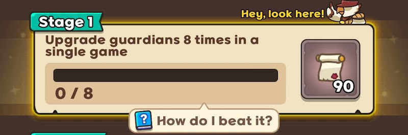
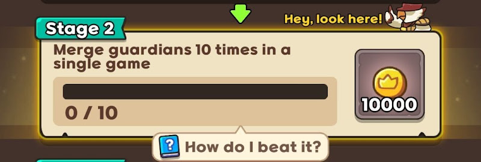
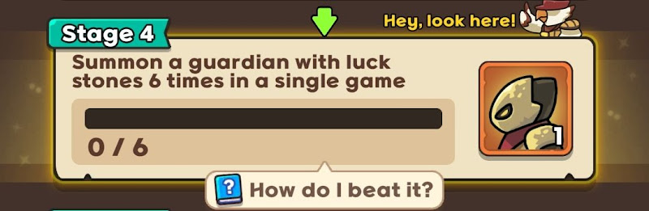

Help I'm New! Guide Quests
For new players, the game has a series of tutorial quests to help players learn the mechanics of the game. Here we will talk about the importance of each activity to your gameplay in the tutorial quests. Each tutorial quest has to be completed in Coop mode and within a single game. Completing one will unlock the next stage.
Stage 1: Upgrade guardians 8 times
Reward: 90 Invitations

This quest counts whether you have upgrading guardian damage in-game. It does not count upgrading your summon level. Upgrading guardian’s damage in-game is important to deal enough damage to get through the waves. From the mid-game onwards, you will be spending some of your mythic stones on upgrading your mythic damage level so that your mythic DPS guardians deal more damage.
In the early game, the Blacksmith mission (upgrade 2 times) can also be completed with a net gain in gold by upgrading common damage level once and epic damage level once.
Stage 2: Merge guardians 10 times
Reward: 10,000 Gold

Merging guardians is done by having 3 of the same guardian (epic or lower) which can then be merged using the merge button to get you a random guardian one tier higher (common -> rare -> epic -> legendary). Merging guardians is important to make use of the excess common guardians you will get early on, and especially important for merging epics into legendaries to be able to summon DPS mythics.
Stage 3: Clear Missions 5 times
Reward: 5 Artifact Keys

Missions in-game will reward you with gold or luck stone(s). With the Luck Stone artifact, each mission you complete will give you bonus luck stones (level 1-5: 1 bonus luck stone, level 6-10: 2 bonus luck stones, level 11: 3 bonus luck stones). Completing missions in the early game is important to gain luck stones to spend on epic roulette summons for building up your board.
Bear in mind the collect 10 luck stones mission. The early golem mission plus 2 golems will be 5 luck stones. Killing the 2 W10 bosses and before 30s for the early kill bonus luck stone will net you another 5. The Lamp artifact will also give you a luck stone at W10. You can spend all your other luck stones before this to summon epics to be able to kill the golems and the W10 boss. Once you complete the 10 luck stone mission you can spend all your luck stones on epic roulettes.
Stage 4: Summon guardians with luck stones 6 times
Reward: Lancelot x1 (Mythic Guardian)

Roulette summoning (ie. using luck stones to summon guardians) is an integral part of the gameplay. You have to learn to use roulette summoning for much of the game to be able to build up your coin stash with the Safe Box artifact (sb) to get a significant ATK boost from the Money Gun artifact (mg).
This quest is something you should be capable of doing every single game. And the reward being Lancelot set you up nicely for attempting hard when you reach sb3.
Stage 5: Summon a Mythic guardian 2 times
Reward: 20 Mythic Stones
Mythic guardians are going to be the mainstay of your board aside from your stunners and the occasional immortal. This quest is to encourage you to lean into the habit of relying primarily on mythics to build up your board.
Take note that not all mythics are worth summoning! Check out the Ultimate Normal Guide for our recommendations for DPS mythics.
Stage 6: Move guardians to recommended tiles 5 times
Reward: 1,000 Diamonds
There are recommended positions for each guardian. Knowing where to place them to best maximise their utility is important.
Stage 7: Stun Bosses for 50 seconds or more
Reward: 30 Mythic Stones
Stun is hugely important. Knowing how to stun enemies to keep them in the kill zone. Knowing where to place your stuns. Knowing how much stuns is needed between both players. Most new players often don’t keep enough stun on the board. The recommended amount is 3x Electro Robots and 6x Shock Robots per player.
Stage 8: Achieve 80 Def Reduction
Reward: Safe Box x1 (Artifact)
Defense reduction is important to enable physical DMG DPSes to continue dealing damage as the enemies’ DEF increases with each wave. Check out the Defense Reduction Guide for a more detailed explanation.
The reward, a Safe Box artifact, is also hugely important. Read the sb/mg guide to understand why.
Stage 9: Earn 100 coins with Bandit’s Loot skill
Reward: 20,000 Gold
Farming coins is really important for sb/mg ATK boosting. Bandit’s Loot skill is the primary means of farming coins early on before sb’s effect dwarfs it once your coins reach sizeable levels. You ideally want to aim for 6-9 Bandits on the board farming coins for you in the early game, but don’t summon beyond 80 summon cost (or 60 if you’re more conservative). If you’re unlucky on Bandits, you just have to settle for how many you have and let them farm whatever coins they can for you.
Stage 10: Earn 500 coins from the Safe Box Effect
Reward: Money Gun x1 (Artifact)
Earning 500 coins from Safe Box should be easy enough as long as you aren’t burning away all your gold all the time. Money Gun is the other half of the vital sb/mg combo and this quest reward unlocks that combo.
Stage 11: Achieve 40 ATK from Money Gun Effect
Reward: 50 Mythic Stones
This quest points you towards using mg to boost your ATK. If you haven’t already, read the sb/mg to understand the importance.
Stage 12: Reach Lancelot’s skill level 6 (via luck stones)
Reward: 10 Artifact Keys
This quest is unusual as Lance is pretty useless in Normal. However, he will be vital in helping to clear Hard mode when your sb is low (ie. sb3-4). In Hard, you will want to max out his Flame skill level before the later waves so he deals maximum %-based damage with his skills.